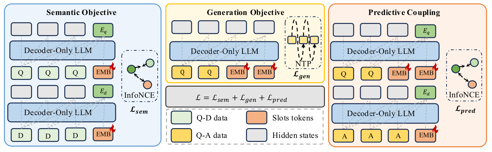
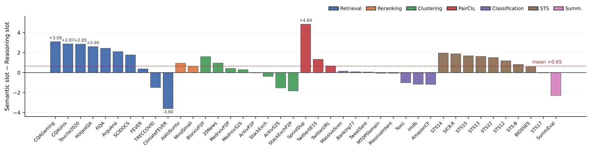

In RAG, in-context example selection and agent memory, the same query usually goes through two models: an embedding model first encodes it into a vector for retrieval, and then a generation model reads it again to answer. The two models are trained separately, and their understanding of the same query never connects. The authors, from Tencent WeChat AI and Sichuan University, argue that to write a coherent answer, a generation model's hidden states must already contain an "answer-relevant understanding of the query", which is exactly what a good embedding should have. They propose ULME, a post-training framework: insert a chain of learnable slots after the query in a causal decoder, then use a loss with a stop-gradient so that information from the generation side shapes the embedding in turn. Across 8 scales from 0.5B to 8B in the Qwen2.5 and Qwen3 families, a single ULME checkpoint beats the strongest open-source baseline on the same backbone by 3.3–4.1 points on MTEB, while matching or beating generation-only fine-tuned models on MMLU, GSM8K, MMLU-Pro and HumanEval.
1. The problem: existing "unified models" only unify parameters
Turning an LLM into an embedding model is well established. E5-Mistral and NV-Embed fine-tune a causal LLM with contrastive learning and take the hidden state of the last token; LLM2Vec goes further and removes the causal mask, turning the model into a bidirectional encoder. They showed that decoder hidden states are enough for very strong embeddings, but the fine-tuned model can no longer be used for generation.
Putting retrieval and generation into one model has been tried too. GritLM trains one LLM on a contrastive loss and a language-modeling loss at the same time; another method, GEM, adds embedding ability to a generation model through extra tokens and self-supervised contrastive learning. The authors argue that these approaches unify only half the way, with gaps in two places.
The first gap is in the mechanism. GritLM switches to bidirectional attention for embedding and back to causal attention for generation, so what the embedding reads out is not on the same computation path as the hidden states used for generation.
The second gap is in the training objectives. The two losses train side by side on shared parameters without supervising each other: generation does not depend on the learned embedding, and the embedding receives no direct signal from the generation side. Sharing parameters does not by itself connect the two.
There is also a more concrete conflict about which position the embedding is read from. The usual way to embed with a causal LLM is to take the hidden state of the query's last token, but in a unified model that very position is responsible for predicting the first token of the answer. The authors call this a representation conflict: retrieval needs a sequence-level state that can be compared with other states by inner product, while language modeling needs a state that feeds the LM head and only cares about the next word, and one hidden state is asked to do both jobs.
2. Method: a chain of slots and three losses

ULME's first step is to give the embedding its own readout positions. Borrowing from latent chain-of-thought methods such as Coconut and pause tokens, it inserts learnable slots between the query and the answer , so a training sample reads , while a document is encoded as . The slots are ordinary positions in the causal forward pass: each slot sees the query and earlier slots, and every answer token sees all slots. The mask is not changed at all and there are no side paths; attention is causal throughout, and one forward pass yields both the embedding and the answer. The first slot (slot 0) serves as the semantic embedding, and the last slot (slot $N-1$) as the reasoning embedding.
Training uses three losses at once. The first two are standard. One is a symmetric InfoNCE between the query representation and the document representation at slot 0, with in-batch negatives gathered across GPUs. The other is ordinary next-token cross-entropy, computed only on the answer. The slots themselves carry no token loss, but the slot chain sits on the causal path that produces the answer, so language-modeling gradients flow back into the slots through the answer's attention to them.
The authors point out that these two losses alone are exactly the "train side by side" setup of earlier unified models. The semantic loss only pulls slot 0 toward documents and ignores what the answer says; the generation loss is conditioned on the slots but never asks any slot to represent anything in particular.
So ULME adds a third loss, called predictive coupling, which builds a bridge between the two sides. It aligns the hidden state of the last query-side slot, , with a pooling of the answer's hidden states from the same forward pass (the mean by default). The alignment uses a one-directional in-batch InfoNCE with a stop-gradient on the answer side:
Putting the stop-gradient on the answer side is deliberate. has seen both the query and the answer, so it holds more information than , which has seen only the query and the slots; the side with less information should reach toward the side with more. If gradients also flowed back into , the answer-side representation would be pushed toward being "easy to tell apart within the batch", interfering with the hidden states the generation loss is supervising. In effect, the answer-side representation is distilled one way into query slots that are available at inference time. The three losses are summed with weights and , and $N=4$ by default.
An example shows what each loss is responsible for. The query is "how do I deduplicate a Python list while keeping order", and the training answer is a snippet using dict.fromkeys plus an explanation. The semantic loss pulls slot 0 toward the embedding of the matching document; predictive coupling pulls slot 3 toward the mean of that answer's hidden states. At inference time there is no need to generate an answer: running the query plus 4 slots is enough to read out the embedding. Retrieval takes slot 0's semantic embedding as the query vector and scores documents by inner product with their vectors; slot 3's reasoning embedding can also be read out on its own, and Figure 2 below compares the two.
3. Embedding results
On the embedding side the training data is E5 contrastive data in LLM2Vec format; on the generation side it is OpenThoughts-114k. Each configuration is trained once and the final checkpoint is reported; at evaluation time no capability is switched off and no head is fine-tuned separately. Baseline numbers come from the LLM2VEC-GEN paper's reports on the same backbones.
MTEB(eng, v2) average:
| Backbone | LLM2Vec | LLM2VEC-GEN | ULME |
|---|---|---|---|
| Qwen3-1.7B | 54.8 | 58.6 | 61.9 |
| Qwen3-4B | 56.8 | 60.6 | 64.1 |
| Qwen3-8B | 56.8 | 61.9 | 66.0 |
Across the three scales, ULME beats the strongest baseline, LLM2VEC-GEN, by 3.3–4.1 points and LLM2Vec by 7.1–9.2 points, and the lead grows with model size, which suggests the gain does not disappear on larger backbones.
Broken down by task category, the advantage comes mainly from retrieval, summarization and pair classification, where ULME beats LLM2VEC-GEN by about 8–9, 7–8.6 and 5.3–5.7 points. The authors note that retrieval and summarization, the two biggest gains, are exactly the tasks where "the target is itself a piece of generated text". This shows that shaping the query representation with the answer helps most on such tasks. The gains are not universal, though: clustering and classification are slightly below LLM2VEC-GEN at some scales, by at most 1.5 points.
On retrieval that requires reasoning, ULME does not trade one ability for another either. On BRIGHT (nDCG@10) it beats LLM2VEC-GEN by 0.7–1.2 points, reaching 21.4 at 8B. AdvBench-IR measures whether a model retrieves harmful content, where lower is better; ULME is 20–25% lower than LLM2Vec and another 1.3–1.8 points below LLM2VEC-GEN. Both directions improve at once, which shows the better retrieval did not come at the cost of safety.
4. Generation results: no worse, and better on code and math
The comparison is with models fine-tuned for generation only on the same OpenThoughts-114k (Gen-only below), so any difference comes only from ULME's extra embedding objectives. On knowledge and math (MMLU, GSM8K, MMLU-Pro), ULME matches or beats Gen-only everywhere except Qwen3-8B MMLU, which is 0.1 lower; the clearest case is 8B GSM8K, 89.5 versus 78.6. On code it is better at every scale: HumanEval is 2.4–4.9 points higher, and 8B HumanEval+ is 67.7 versus 62.8. The authors' explanation is that making the query slots summarize in advance what the model is about to generate is especially useful for structured output like code, which can be checked by running tests. Both ULME and Gen-only sometimes score slightly below the original backbone; the authors attribute this to the distribution shift from continued training on OpenThoughts-114k, not to the joint objective.
5. Ablations: the three losses really do pull on each other
All ablations use Qwen2.5-7B-Instruct, with a 10-task MTEB-lite for embedding and MMLU and GSM8K for generation.
First, are slots needed? Without slots, taking the query's last token directly ($N=0$), MTEB-lite is 58.6, 5.2 points below the 63.8 of $N=4$, and MMLU is 2.0 points lower too. This shows the readout-position conflict from Section 1 is a real cost. One slot recovers most of the gap, $N=4$ is best, and $N=8$ dips slightly; the authors guess that a longer slot chain dilutes the gradient each slot receives.
Next, remove the losses one at a time. Without the semantic loss, MTEB-lite collapses from 63.8 to 31.2 while generation is unaffected; without the generation loss, MMLU drops 14.7 and GSM8K drops 15.8. Both are expected. What stands out is that removing one loss also moves the other side's score. Without the generation loss, embedding also drops 2.8 points, which shows that the answer-side hidden states shaped by language modeling really do feed signal to the query slots. Without predictive coupling, generation holds steady and embedding drops 3.6 points. That last number is the cleanest measure of what the coupling itself contributes, that is, the cost of going back to the earlier "train side by side" paradigm.
How the coupling target is chosen matters as well. The mean of the answer's hidden states scores 63.8, a length-weighted mean (the paper does not say how the weights depend on length) 62.7, and the answer's last token alone 61.9. The last token is also responsible for predicting the next word, so using it as the target brings local generation pressure into the embedding. Generation scores barely change under all three choices, which shows the two abilities are supervised through distinct channels within the shared computation.

Finally, the two slots really do learn different things. The tasks where slot 0 leads most, such as SprintDup (+4.84) and HotpotQA (+2.60), are ones where relevance depends mainly on word or entity overlap. The tasks where slot $N-1$ leads most, such as ClimateFEVER (+3.60) and SummEval (+2.29), require understanding what a document actually claims, summarizes or expresses. So slot 0 behaves more like traditional semantic matching, while slot $N-1$ is closer to "query understanding after having read the answer".
6. Limitations and practical value
The paper has no dedicated limitations section; the points below are read from the experimental setup. The main tables show only three Qwen3 scales, with the other five backbones in the supplementary material. All ablations use one backbone (Qwen2.5-7B) and a 10-task subset. Each configuration is trained once, and no variance is reported. Baseline numbers are quoted from the LLM2VEC-GEN paper rather than re-run, and backbones it did not report are left blank, so some scales lack a full side-by-side comparison. There is no direct comparison in the same table with unified models such as GritLM and GEM. The inference overhead of the slots, and the end-to-end gain in a real RAG or agent system, are not reported either.
For industry, the paper matters for how systems are deployed. RAG and agent-memory systems today usually deploy an embedding model and a generation model side by side, each taking its own GPU memory and needing its own maintenance. ULME offers a workable path: one checkpoint, causal attention throughout, no mode switching, with both embedding and generation as good as dedicated models, and computing an embedding requires running only the query plus 4 slots, without generating an answer first. Two engineering details are worth borrowing: give the embedding readout its own positions instead of taking over the next-token-prediction position, and use a stop-gradient to distill "the side that knows the answer better" into a query representation available at inference time. Whether it can really replace a separate embedding service still depends on its recall on your own retrieval corpus and on the extra latency the slots add.